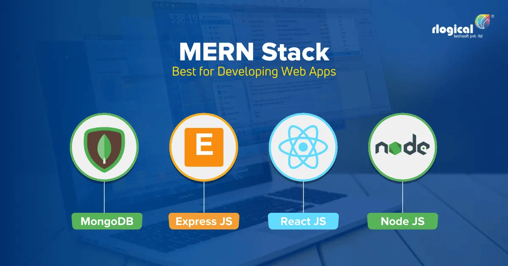

Course Description
This course Web programming in the back-end (server side programming) and front-end (client side programming). Server side topics including Node JS, Restful service, form processing, NoSQL database access, managing persistent data, maintaining state, web site design layered architecture, web site security. Client-side topics include JavaScript programming, the Document Object Model, accessing CSS with Javascript, creating customized HTML widgets, AJAX, XML, JSON, and libraries/frameworks such as React JS and Bootstrap.

Learning Outcomes
- I can create and format a web page using appropriate client-side languages (such as HTML, CSS, JavaScript), including images, hyperlinks, and tables.
- I can build dynamic web pages.
- I can use modern development techniques.
- I can develop server-side scripts that retrieve and store information in a file or database.
- I understand when to place functionality on the client-side or server-side.
- I can design web sites by applying contemporary principles of usability.
Planned Topics
- Syllabus and Course presentation (1 lecture)
- Introduction to Web Programming (1 lecture)
- Basic Front-end Web Page (HTML, CSS) (5 lectures)
- JavaScript (3 lectures)
- Bootstrap Library (3 lectures)
- Node JS (3 lectures)
- Good Practices - Testing (3 lectures)
- Express Server in Node JS (3 lectures)
- MongoDB persistence with Node (4 lectures)
- Stateful and Stateless (3 lectures)
- Midterm (2 lectures)
- React JS (9 lectures)